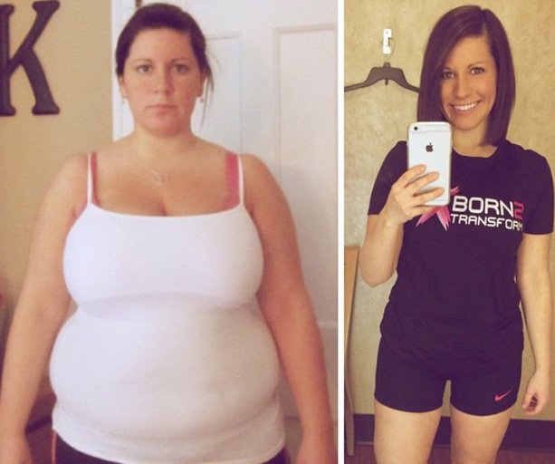
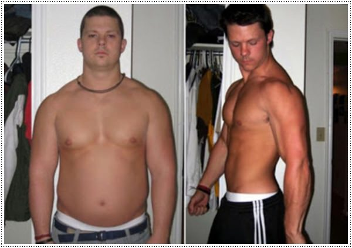
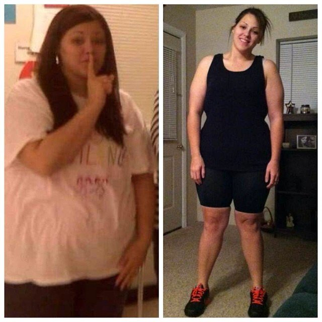
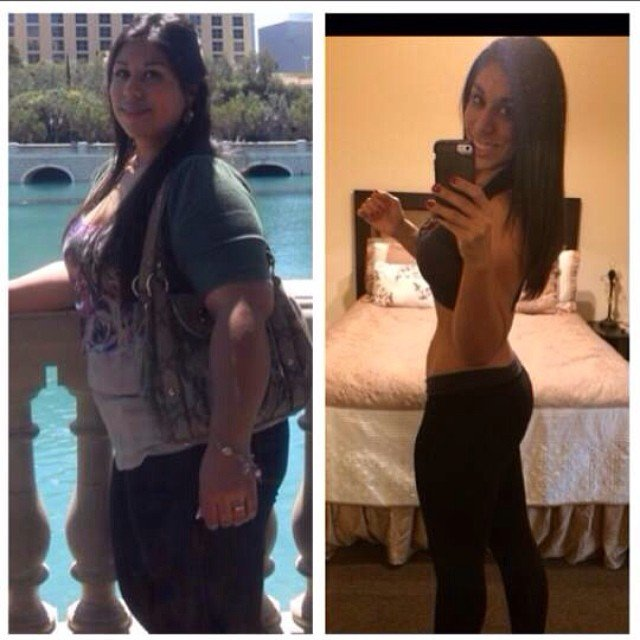
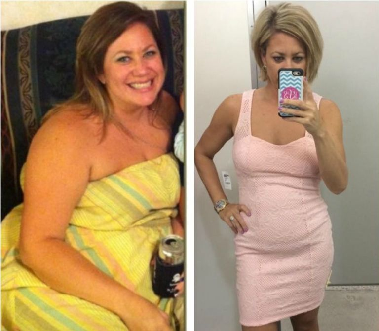

Hässliches Entlein verwandelt sich in schönen Schwan! Wie du selbst innerhalb weniger Monate von einem fetten, schweren Mädchen zu einem sportlichen heißen Mädel wirst...
Hallo alle zusammen! Ich heiße Anne. Heute möchte ich auf meinen Blog über ein interessantes und wichtiges Thema sprechen. Normalerweise bekomme ich eine Menge Fragen darüber, wie man abnehmen und eine erfolgreiche Lady werden kann. Ok, heute werden wir genauer über dieses Thema sprechen.
Ich bin eine junge und erfolgreiche Frau. Ich habe mein eigenes Unternehmen, und bin zufrieden mit mir selbst und meinem Job. Die Leute bewundern mein Leben und sagen, es scheint wie ein Märchen. Aber die Wahrheit wird euch überraschen. Noch vor einem Jahr war das alles anders.
Dein Leben kann sich jederzeit ändern, es liegt nur an dir selbst, es in die Hand zu nehmen!
Ich war ein gewöhnliches, dickes Mädchen, das auf die ganze Welt wütend war, weil ich es nicht geschafft habe, abzunehmen oder weniger zu essen. Sicherlich hatte ich keine Freunde und nur wenige soziale Kontakte. Jungs konnte ich nicht in die Augen sehen, geschweige denn mit ihnen reden. Von Geburt an wurde ich immer wieder gehänselt wegen meines Äußeren. Ich glaubte nicht, dass irgendjemand mich wertschätzen oder lieben könnte. Deswegen errichtete ich eine Mauer um mich herum und machte Bücher zu meinen Freunden. Aber dann stieß ich auf im Internet.
Es gab Unmengen an Informationen und Bewertungen über aber die machten keine Sinn. Viele Leute haben dank abgenommen. Promis posteten ganz öffentlich auf Facebook, dass sie mit diesem Nahrungsergänzungsmittel abgenommen haben. Ich war so aufgewühlt, und musste es sofort bestellen, auch wenn ich, ehrlich gesagt, sehr skeptisch war. Ich dachte, es wäre kein Unterschied zum letzten Mal. Damals hatte ich, nicht viel, aber in bisschen in den ersten zehn Tagen abgenommen, und das doppelte an Gewicht im Anschluss wieder zugelegt.
Nur die Schlanken trauen sich, zu erzählen, dass eine Diät nicht der Rede wert ist, und dass man mit nur ein bisschen Sport zwei, drei Mal in der Woche überschüssiges Fett ganz leicht los werden kann. Aber diese Dinge existieren nur in der Phantasie!

Um ehrlich zu sein, ist es echt hart, eine Diät zu machen. Übergewichtige Menschen lieben es, zu essen, und ich konnte keinem Gericht aus dem Weg gehen. Übergewichtige Menschen verstehen mich jetzt sicher! Es war lange her, als ich das letzte Mal im Fitnessstudio war und hatte auch nicht vor, nochmal dort hin zu gehen. Keiner weiß wirklich, wie schwierig es ist, abzunehmen, wenn man nicht wirklich dick ist und Fett kein richtiges Problem darstellt! Nach 15 Minuten Sport kommt man sich vor, als müsste man sterben, man nimmt trotzdem nicht ab, verliert die Geduld und ist gestresst. Man wird unglücklich und gereizt, weil man an seine Grenzen und sein Gewicht gebunden ist.
Also beschloss ich, mit abzunehmen, enthält viele Zutaten, die den Stoffwechsel anregen und den Gewichtsverlust auf natürliche Weise unterstützen, ohne Diät oder Sport. Zudem helfen die enthaltenen Acai Beeren, Fett zu verbrennen und unterdrücken die Entstehung neuer Fettzellen.
Ich habe 13 Kilo in den ersten zehn Tagen abgenommen und mehr als 10 Kilo in den darauffolgenden Tagen. 25 Kilo insgesamt. Zahlen sagen alles - das ist mein erster Erfolg.

Ich habe morgens ein Glas anstelle des regulären Frühstücks getrunken. Ich konnte innerhalb des ersten Monat extreme Veränderungen beobachten. Ungewünschtes Fett nahm zunehmends ab und mein Körper nahm immer mehr die Form eines richtigen Mädchens an. Es funktionierte, auch wenn ich es kaum glauben konnte. Ich betrachtete mich im Spiegel und sah mir meine neues Ich an. Das ist der beste Beweis dafür, dass es wahr ist.
Insgesamt habe ich 30 Kilo abgenommen! Schockierend? - Klar ist es das! Jetzt könnt ihr euch vorstellen, wie die Leute reagiert haben. Sie haben mich gefragt, wie ich so viel in so kurzer Zeit abgenommen habe und jeder war von den Ergebnissen total beeindruckt. Ich bin für diese Leistung so dankbar, so dass ich Menschen, die dasselbe Problem haben, helfen wollte. Also habe ich das getan. Jetzt biete ich Training und Entgiftungstherapien für übergewichtige Menschen an. Überschüssiges Fett war in der Vergangenheit mein Verhängnis, jetzt ist es die Quelle meines Wohlstandes. Ich bin der lebende Beweis dafür, dass sich das Problem mit dem Übergewicht lösen lässt. Man muss nur tätig werden!
Hannah
Seht euch alle das Ergebnis an! So toll Mädchen, so muss es sein! Es geht total in Ordnung, wenn du nicht aufhörst, du verdienst das tolle Ergebnis. Was für eine toller Körper!
Sabine
Es ist nicht das erste Mal, das ich von dem Produkt höre, aber ich konnte mich noch nicht dazu durchringen, zu bestellen (Trotz der überraschenden Ergebnisse, ist sie noch immer skeptisch)
Heidi
Anne , ich verstehe dich. Du beschreibst ganz genau, wie sich übergewichtige Menschen fühlen, als würde ich einen Text über mich selbst lesen. Keiner hat eine Ahnung davon, wie schwer es ist, abzunehmen, sie denken alle, dass man nur aufhören muss, zu essen und Sport machen muss, etc. und dann ist man seine Probleme los. Aber keiner versteht, dass das echt die Hölle ist. Danke Anne, dass du es ihnen erklärst und uns den Respekt zeugst. Ich hoffe, dass ich mit diesem Schokoladendrink abnehmen kann.

Mara
Zuviel essen und dann rumheulen, wie albern!
Anne
Mara, sei nicht so streng, jeder hat seine Schwächen!
Steffie
Tja, es ist schön, wenn man schlank ist, aber ich habe dieses Problem seit meiner Kindheit. Der Stoffwechsel war hin. Es hat einfach nicht funktioniert, egal, was ich probiert habe. Jedes Mal, wenn ich diesen und jenen Kommentar sehe, will ich mich einfach nur umbringen.
Anne
Mach dir keine Sorgen Steffie. Bestelle einfach . Ich glaube, das wird deine Problem lösen.
Bernd
Mein Leben mit wenig körperlicher Aktivität zwingt mich dazu, genau auf mein Gewicht zu achten. Aber mit zunehmendem Alter wird das immer schwieriger. Meine Frau hat mir auf Anraten ihrer Freundin gekauft. Ich denke, es ist sehr gut, leicht anzuwenden und bringt unglaubliche Ergebnisse.

Daniela
Ich bemerke überhaupt keinen Unterschied. Ich nehme das Zeug seit gut zwei Wochen und habe wahrscheinlich einen Kilo verloren. Es kommt mir vor, als hätte ich das Geld umsonst ausgegeben. Und doch kenne ich ein paar Leute, die mit diesem Produkt abgenommen haben.
Anne
Hi Daniela, du hast sicherlich eine Fälschung erwischt, die gibt es mittlerweile überall. Du sollte auch einer authentischen Webseite bestellen. Das schadet dem Ruf des Produkts, das ist echt schade.
Biggi
Ich habe das Produkt nach der Geburt meines zweiten Babies genommen. Zu der Zeit war ich so dick wie ein Ballon. Ich dachte, das lag an der hormonellen Veränderung, aber die Testergebnisse sagten etwas anderes. Ich habe angefangen, zu nehmen und musste mir keine Sorgen mehr machen. Mein Bauch schrumpfte und ich war sogar schlanker als vor der Schwangerschaft.

Hannah
Oh mein Gott, ich muss mir das jetzt sofort bestellen! Ich will vor dem Urlaub noch abnehmen, will mich nicht schämen, wenn ich mich in meinem Bikini sehen lasse.
Chrissi
Ich nehme es seit 2 Wochen und habe 10 Kilo abgenommen. Aber ich muss noch mehr abnehmen. Wie Anne gesagt hat, ist das möglich. Man trinkt ganz einfach morgens und geht zur Arbeit. Die Körperorgane machen den Rest und man muss weder eine Diät machen, noch Sport treiben. Als Mutter von drei Kindern, wie hätte ich auch die Zeit dafür? Allgemein gesprochen, mag ich es sehr und werde es weiterhin verwenden.

Nina
Ich verwende , weil mein Arzt mir dazu geraten hat. Ich habe ernsthafte Probleme mit meinem Gewicht und habe viele Dinge ausprobiert. Nach unzähligen Diäten war ich so frustriert, dass ich mich einer Schönheits-OP unterzog. Anstrengend und schmerzhaft. Du hast das schon auf den Punkt getroffen Anne. Übergewichtige Menschen werden ständig kritisiert, aber keiner versteht, wie schwer es eigentlich ist. Ich erzähle keine Märchen. Abzunehmen ist nicht so leicht, wie die Leute immer sagen. Nach der Fettabsaugen habe ich wieder zugenommen und jetzt ist wieder alles beim alten. Ich dachte, ich verliere den Verstand, aber dann habe ich zum Glück einen guten Arzt gefunden. Jetzt mache ich wieder Fortschritte.

Anne
Alles wird gut, mach dir keine Sorgen. funktioniert, sogar in den schlimmsten Fällen. Hab vertrauen und lasse dich regelmäßig von deinem Arzt untersuchen.
Monika
Ich habe viele gute Bewertungen über dieses Produkt im Form gelesen und habe es nur bestellt.
Sandra
Wie lange muss ich das nehmen? Was, wenn ich damit aufhöre?
Anne
Hi Sandra, alles wird gut, nachdem du aufgehört hast, es zu nehmen. Es kommt auf jede einzelne Person an, aber überschreite die 2 Wochen nicht.
Franzi
Ich habe es für meine Mutter bestellt. Sie hat schon lange danach gesucht.